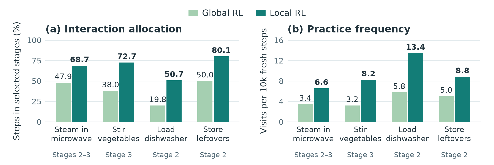

See the progress that terminal reward misses
Terminal reward 0Subtasks verified 2
Both food-placement events are recorded before the bowl-to-fridge bottleneck.
Replay with the task DAG ↓A robot can make progress and still fail the task. ReFocus turns that progress into feedback, finds where the policy gets stuck, and gives those bottlenecks the practice they need.
The robot puts both foods in the bowl, then stalls before storing it. A terminal reward of zero misses those two completions and gives no indication of which part to practice.
Both food-placement events are recorded before the bowl-to-fridge bottleneck.
Replay with the task DAG ↓Four successful evaluation rollouts show the bowl-to-fridge practice window.
Explore the practice window ↓ReFocus couples global learning with local practice. A shared policy learns from task progress, then revisits the stages that most need attention.
Both food placements earn credit even when the rollout fails to store the bowl.
Normal covers entry to target. Prefix adds earlier steps and Suffix continues to task completion.
The Scheduler reads prior bottlenecks, practice costs, and evaluation results to plan the next round.
Play or scrub a failed RoboCasa365 rollout to see which subtask completions the environment verifies. Each stage gets a share of the task-level reward budget, divided among its subtasks.
StoreLeftoversInBowl · Failed rollout · 6× playback
The Scheduler selects a task segment using evaluation rollouts and prior practice. Switch between the full rollout, Prefix, and Suffix, then drag through the selected clip.

In these four multi-stage tasks, Local RL spent a larger share of its interaction in the selected stages and visited them more often per 10,000 fresh steps. A rollout counts as one visit if it takes a fresh step in the selected stages. Stage labels follow the archived training run, and both metrics exclude prefix replay.
Download data for all 16 tasksFull-task evaluation and practice history guide which windows the Scheduler retains, revises, or skips in the next round.
ReFocus improves the SFT-initialized π0.5 policy across two long-horizon simulation benchmarks. Scores below are reported full-task success rates.
Each point is a full-task evaluation.
The charts use different vertical ranges to show changes within each benchmark. R1–R3 denote successive rounds of Global and Local RL.
Select any bar to inspect its result.
Select any bar to inspect its result.
Pick up the bowls on the right and left and stack them onto the bowl in the middle.
Put the apple and the mangosteen on the plate.
Pick up the bread from the plate, place it into the toaster, and then press the toaster's switch.
Select any bar to inspect its result.
The curves follow playback. Select a keyframe to jump to that point in the rollout.
Offline comparison on one failed rollout with fixed critic predictions. The window curve credits visually annotated lift and transfer milestones.
Critic predictions with and without progress rewards on the same images. Both episodes were included in critic training.